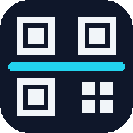

לחץ על "התחל סריקה" והחזק את הברקוד בתוך המסגרת
כל סריקה מועתקת ללוח. אם הדפדפן לא מאפשר העתקה אוטומטית, הקש על "העתק".
עדיין לא נסרק כלום.
הרשימה ריקה. סרוק ברקודים כדי להוסיף.
קוד שנשאר מול המצלמה לא נסרק שוב. כדי לסרוק אותו שוב, מרחיקים אותו מהמצלמה לזמן שנבחר.